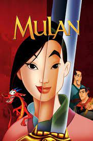

Blanca nieves (1937)
La malvada madrastra de Blancanieves no puede soportar que la belleza de la joven sea superior a la suya y decide acabar con su vida. La bellísima Blancanieves consigue refugiarse en una minúscula cabaña del bosque en la que habitan siete simpáticos enanitos. A pesar de todo, la cruel madrastra consigue dar con su paradero y la envenena con una manzana. El veneno sumirá a la joven en un sueño eterno del que tan sólo un príncipe azul podrá despertarla.

Cencienta (1950)
La idílica vida de la preciosa Ella se viene abajo cuando, tras la muerte de su madre, su padre se vuelve a casar. La joven quiere apoyar a su padre y acoge con cariño en la casa familiar a su madrastra y a sus hijas, Anastasia y Drisella. Sin embargo, cuando el padre de Ella muere inesperadamente, la joven se encuentra a merced de una nueva familia celosa y cruel.>
La bella durmiente (1959)
Había una vez dos reyes que olvidaron invitar a la malvada bruja Maléfica al cumpleaños de su hija Aurora. Maléfica, enfurecida, lanzó un terrible hechizo sobre la princesa. Pero sus tres hadas madrinas descubren una forma de romper el maleficio.

La sirenita (1989)
La sirena Ariel está fascinada por el mundo de los humanos, pero su padre le prohíbe relacionarse con ellos. En un viaje secreto, se enamora de un humano y recurre a una perversa hechicera para que, mediante un conjuro, su amor triunfe.

La bella y la bestia (1991)
Bella es una joven brillante e independiente que decide entregarse como prisionera a una despiadada bestia a cambio de que esta libere a su padre. A pesar de sus temores, Bella se hace amiga del hechizado servicio del castillo, aprende a ver más allá del espantoso físico de la Bestia y descubre que tiene el bondadoso corazón de un auténtico príncipe.

Aladdin (1992)
Aladdin es un ladronzuelo que se enamora de la hija del Sultán, la princesa Jasmine. Para poder conquistarla aceptará un desafío de Jafar. Aladdín tendrá que entrar en una cueva en mitad del desierto y conseguir una lámpara mágica que contiene al Genio que será el encargado de concederle todos sus deseos.
Pocahontas (1995)
Pocahontas es la hija de Powhatan, el jefe de una tribu india de América del Norte. Un día observa la llegada de un grupo de colones ingleses, encabezados por el ambicioso gobernador Radcliff y el valiente capitán John Smith. Acompañada de sus compañeros animales, Pocahontas entabla una amistad con el capitán John Smith. Sin embargo, la ambición de los colonos hace que surjan tensiones entre las dos culturas. Entonces Pocahontas deberá encontrar una manera de lograr la paz entre los dos bandos.
Mulan (1998)
El emperador chino emite un decreto que exige que cada hogar debe reclutar a un varón para luchar con el ejército imperial en la guerra contra los Hunos. Para salvar a su anciano padre de este deber, su única hija Fa Mulan se hace pasar por soldado y toma su lugar. La joven se someterá a un duro entrenamiento hasta hacerse merecedora de la estima y de la confianza del resto de su escuadrón.
La princesa y el sapo (2009)
La trabajadora y ambiciosa, Tiana sueña con abrir el restaurante más fino de Nueva Orleans. Su sueño se desvía un poco cuando conoce al príncipe Naveen, quien ha sido transformado en un anfibio por el Dr. Facilier. Confundiéndola con una princesa y esperando romper el hechizo, Naveen le da un beso a la pobre Tiana, transformándola en una rana. La pareja vive una gran aventura por los pantanos para buscar la ayuda de una poderosa sacerdotisa vudú.

Enredados (2010)
Flynn rider, el más buscado y encantador bandido del reino, se esconde en una misteriosa torre y allí se encuentra con Rapunzel, una bella y avispada adolescente con una cabellera dorada de 21 metros de largo, que vive encerrada allí desde hace años. Ambos sellan un pacto, y a partir de ese momento la pareja vivirá emocionantes aventuras en compañía de un caballo superpolicía, un camaleón sobreprotector y una ruda pandilla de matones.
Valiente (2012)
Merida, la impetuosa y valiente hija de un rey escocés Fergus y de la reina Elinor, es una hábil arquera que desea surcar su propio camino en la vida. Su desafío a una vieja tradición molesta a los señores y provoca un caos en el reino. Merida busca ayuda con una bruja excéntrica, que le concede un deseo malogrado. Ahora, Merida debe descubrir el significado del coraje y deshacer una maldición bestial antes de que sea tarde.
Frozen (2013)
Una profecía condena al reino de Arendelle a vivir en un invierno eterno. La joven Anna, el temerario montañero Kristoff y el reno Sven deben emprender un viaje épico y lleno de aventuras en busca de Elsa, la hermana de Anna y Reina de las Nieves. Ella es la única que puede poner fin al gélido hechizo.
Moana (2013)
Moana Waialiki es una joven entusiasta del mar y la única hija de un jefe marinero. Cuando los marineros de su aldea no pueden pescar ningún pez y todas las cosechas fallan, Moana descubre que el semidiós Maui causó el infortunio después de robar el corazón de la diosa Te Fiti. La única manera de salvar el destino de la isla es persuadiendo a Maui para que le devuelva el corazón a Te Fiti. Entonces, Moana emprende una arriesgada aventura para salvar a su aldea junto al semidiós Maui.
Wifi Ralph (2018)
Para dar mayor emoción a la vida de su amiga Vanéllope, Ralph decide crear una nueva ruta en su juego Sugar Rush. Sin embargo, las consecuencias de esta decisión serán más preocupantes que divertidas: uno de los mandos del juego se rompe y el señor Litwak decide apagar la máquina para siempre. Ralph sale de los Recreativos Litwak y se adentra en el inexplorado y emocionante mundo de Internet.

Princesita Sofía (2012 - 2018)
Sofía es una chica normal cuya vida cambia repentinamente cuando su madre se casa con un rey, por lo que debe adaptarse a los protocolos de la vida real.
Elena de Avalor (2016 - 2020)
Luego de salvar a su reino de una hechicera malvada, la Princesa Elena debe prepararse para su nuevo rol.
Encantada (2007)
Giselle, la princesa de un cuento de hadas, es desterrada por una reina malvada y termina en el Manhattan moderno, en donde la música, la magia y los finales felices no son muy frecuentes. Giselle se siente extraña en su nuevo mundo, hasta que un abogado divorciado llega para ayudarla. Giselle empieza a enamorarse de su benefactor, pero el romance de su libro de cuentos se complica más cuando un príncipe de su mundo llega a rescatarla.
Blanca nieves y el cazador (2012)
Mucho antes de ser apuñalada y vencida por Blancanieves, la malvada reina Ravenna fue testigo de cómo su hermana Freya sufría una desgarradora traición y huía del reino. Freya vive desde entonces en un lejano palacio invernal, donde ha creado una legión de cazadores, pero descubre que Eric y la guerrera Sara han incumplido la única regla impuesta a los soldados: desterrar el amor eternamente de sus corazones.

Espejito espejito (2012)
Una princesa exiliada es salvada de la muerte por un grupo de ladrones diminutos y espera poder recuperar su reino en contra de una reina malvada.

Malefica (2014)
Maléfica es una bella joven de corazón puro que vive una vida idílica en su reino del bosque. Cuando un ejército invasor pone en peligro el reino, Maléfica se erige como la temible protectora del bosque. Sin embargo, una despiadada traición endurece su corazón y la convierte en una criatura en busca de venganza. Maléfica empieza una batalla contra el sucesor del rey y lanza una maldición contra su hija Aurora. Sin embargo, se da cuenta de que la joven es la única que puede traer la paz al reino.

La cenicienta (2015)
La idílica vida de la preciosa Ella se viene abajo cuando, tras la muerte de su madre, su padre se vuelve a casar. La joven quiere apoyar a su padre y acoge con cariño en la casa familiar a su madrastra y a sus hijas, Anastasia y Drisella. Sin embargo, cuando el padre de Ella muere inesperadamente, la joven se encuentra a merced de una nueva familia celosa y cruel.

La bella y la bestia (2017)
Bella es una joven brillante e independiente que decide entregarse como prisionera a una despiadada bestia a cambio de que esta libere a su padre. A pesar de sus temores, Bella se hace amiga del hechizado servicio del castillo, aprende a ver más allá del espantoso físico de la Bestia y descubre que tiene el bondadoso corazón de un auténtico príncipe.

Aladdin (2019)
Aladdin es un ladronzuelo que se enamora de la hija del Sultán, la princesa Jasmine. Para poder conquistarla aceptará un desafío de Jafar. Aladdín tendrá que entrar en una cueva en mitad del desierto y conseguir una lámpara mágica que contiene al Genio que será el encargado de concederle todos sus deseos.

Mulan (2020)
El emperador chino emite un decreto que exige que cada hogar debe reclutar a un varón para luchar con el ejército imperial en la guerra contra los Hunos. Para salvar a su anciano padre de este deber, su única hija Fa Mulan se hace pasar por soldado y toma su lugar. La joven se someterá a un duro entrenamiento hasta hacerse merecedora de la estima y de la confianza del resto de su escuadrón.